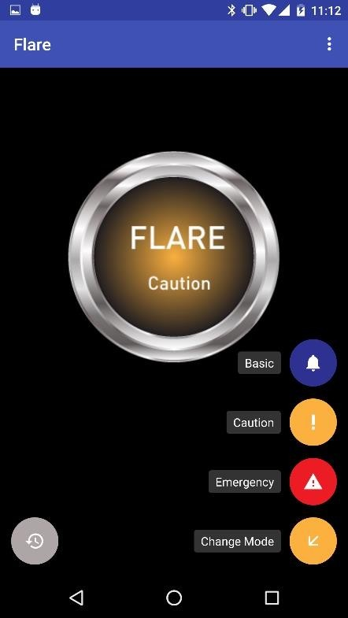
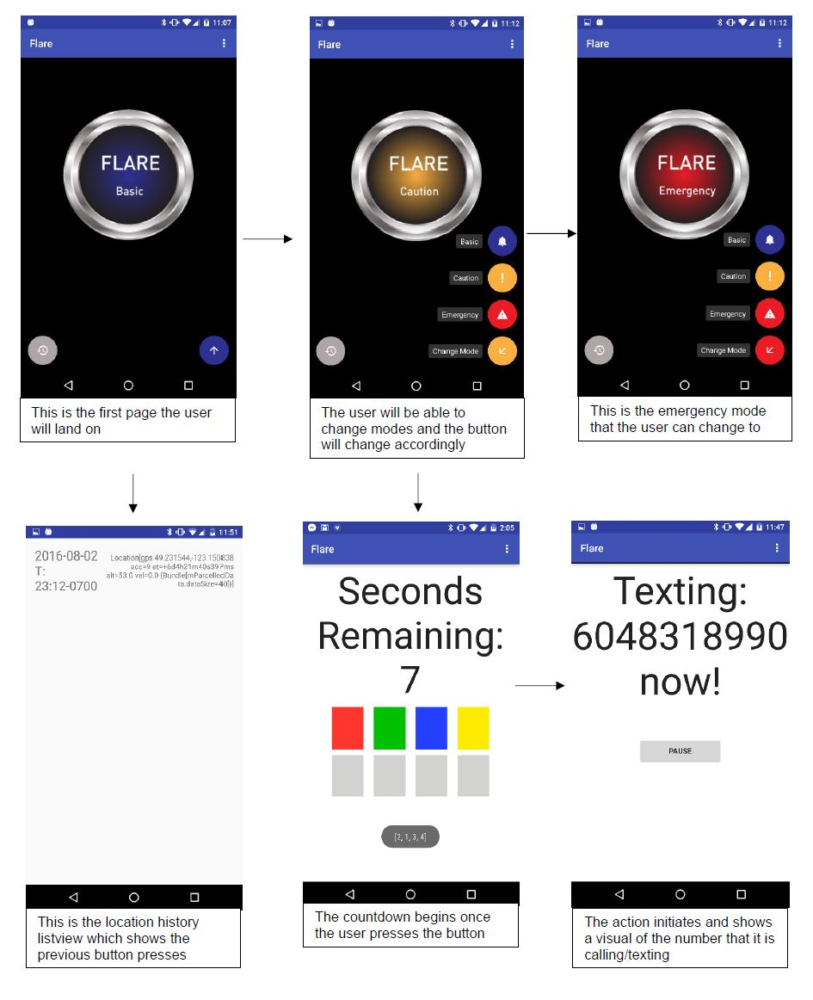

Sexual assault and rape has been the headline of every major news outlet both
nationally and at the international level. Victims under the age of 18 make up 44% of
sexual assault victims in the United States, and 93% of these victims know the
perpetrators, or trust them. Sexual assault can occur anywhere, from the recent
incidents in both SFU and UBC, to the Stanford rape case that occurred last year.
Victims often find themselves incapacitated nor do they possess the capacity to contact
emergency responders. That’s why we wanted to develop an application that does that
for a potential victim.
Research
Our focus on research was to find out how perpetrators carry out their attacks on victims. We have found two of the most common scenarios in which a victim is assaulted. The first is that the victim is completely rendered from responding, or is already rendered as such. An example would be that the victim is drunk or that they are under some sort of sedative drug. The second is that the victim, most likely alone, is attacked and the perpetrator attempts to render the victim to be unable to respond to such an attack, either by holding them down physically or preventing them calling for help. What we strive to do, therefore, is to reduce the number of steps needed to contact emergency responders or anyone for that matter, primarily through mobile phones. Why mobile phones? As the world becomes increasingly digitized, mobile phones has become an extension of everyone, allowing users access to a multitude of information and features, including access to emergency responders. Quick access to emergency calls are a standard feature in most mobile phones today. Samsung’s S series include a quick Emergency Call button on the lock screen and will allow users to call emergency responders without unlocking the phone. The problem to this, is that, once the user has pressed this button, the user is still required to make precise actions, dialling the number 911. What if the user was already under attack and struggling to hold the phone? For IPhones, the feature is identical, and with the release of the IPhone X, the feature was almost entirely hidden.
Functionality

The basic functionality consists of pressing of a simple button fragment to initate the action that was tied to it, calling emergency services. This can be modified to respond to three modes: Caution, Emergency and Basic. These modes are customizable by the user. They are able to customize which number or how many contacts should the app contact. They can be determined by the severity of the problem, from minor calls to full emergencies.
Development
As we developed the application, we wanted the application to be quick at contacting emergency responders at the touch of a button. The problem with this, is that what if a user accidentally did contact emergency responders without the need for them? Thus, we implemented a system that if Flare is activated accidentally, a countdown begins before its features are fired up. The countdown timer can be customized by the user. As a developer, it was my responsibility to develop and design this feature.
Interaction
Below is a summarized interaction flow chart that outlined how the user would active Flare.

The user would then use a matching number/color system that requires the user to match the square/number (pin) to deactivate Flare.
Lock/Pin System
For the development process, I created a function that detected a dragging action from the user. In this case, In created the squares as object, which this function listens to when the user drags the. When the user drops the color into the proper square, the function resets once more.